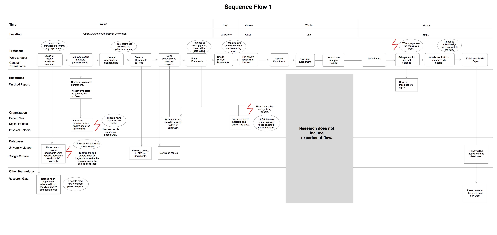

uReveal for Academics
Providing Academics with the Tools they Need to find Relevant Work
Overview
Within a group of four, we designed a system that supports research academics conducting research. We proposed additional functionality for the system uReveal to expand the user base to support researchers. This project focused on a rich user centered and contextual research process.
My Role: User Research
Team Members: Steven Connors, Gus Henry, Elise Qian
Context: User Centered Research and Evaluation, Fall 2016
Client: uReveal
Interviewing
We conducted interviews with three academics: 2 professors and 1 Ph.D Student.
Affinity Diagramming
×